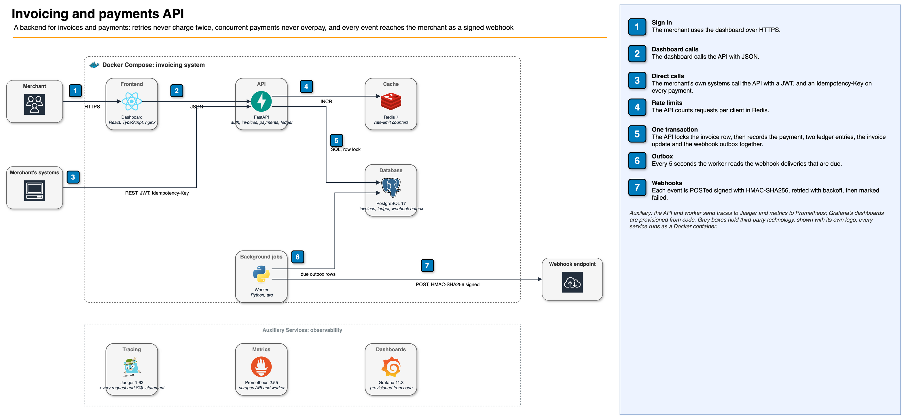
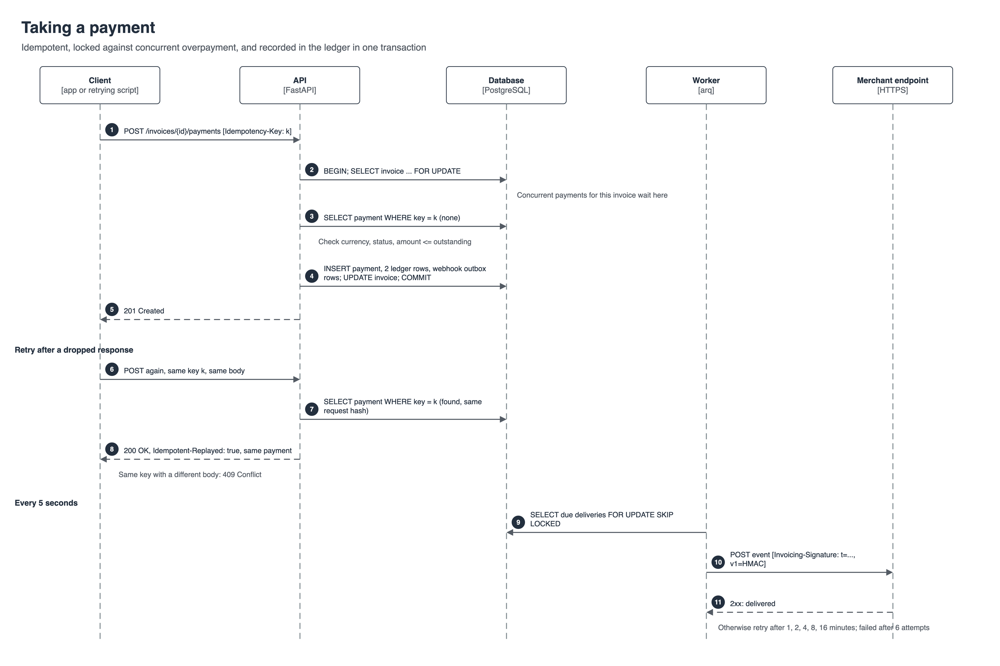
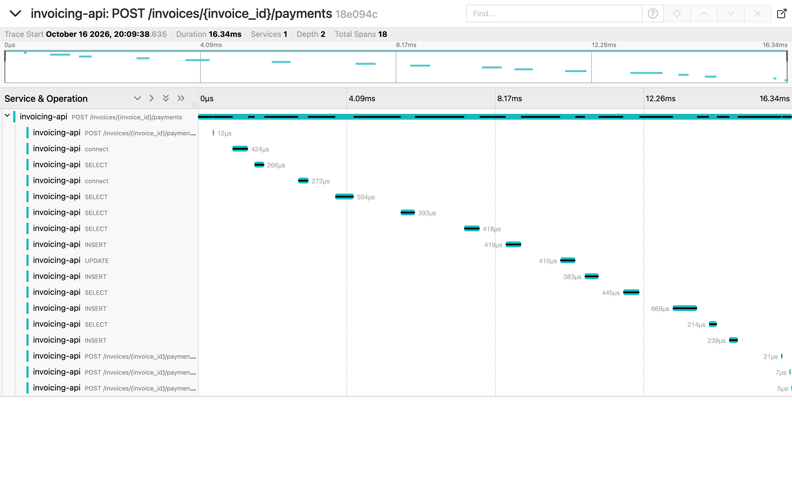
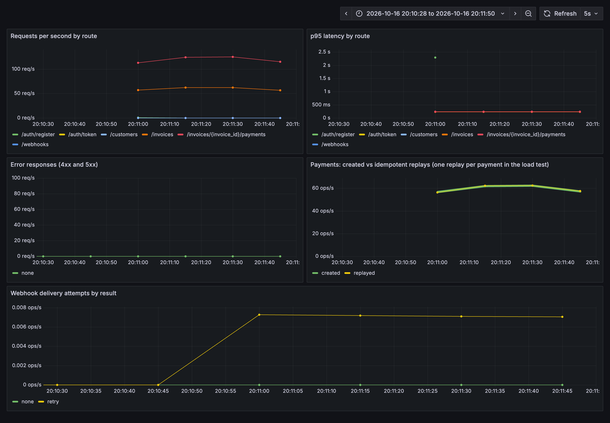

Walkthrough in five parts: what each piece does, why it was built that way, and how to talk about it in an interview.
Repo: github.com/gumagatsby/invoicing-api

| Piece | Technology | Job |
|---|---|---|
| API | Python 3.13, FastAPI, SQLAlchemy (async), Alembic | Auth, customers, invoices, payments, ledger, webhooks, rate limits |
| Worker | arq | Sends due webhooks every five seconds, with retries |
| Database | PostgreSQL 17 | All records; row locks and constraints enforce the money rules |
| Cache | Redis 7 | Rate-limit counters shared by every API replica; worker scheduling |
| Dashboard | React, TypeScript, Vite, nginx | Invoices, payments and the ledger for a signed-in merchant |
| Observability | OpenTelemetry, Jaeger, Prometheus, Grafana | Traces down to each SQL statement; latency, payment and webhook metrics |
Money is stored as integers of pence, cents or euro cents, never floats, and each invoice has one currency.

Every payment request carries an Idempotency-Key. If the client never sees the response (a dropped connection, a timeout) and retries with the same key, it gets the original payment back with Idempotent-Replayed: true. The same key with a different amount is a client bug and gets 409. The key is unique per merchant in the database, so not even an application bug can record two payments for one key.
The payment locks the invoice row (SELECT ... FOR UPDATE) before reading the balance, so two simultaneous payments run one after the other and the second sees the first. A CHECK (paid_minor <= total_minor) constraint is the last line of defence.
| Concurrency test (real PostgreSQL) | Result |
|---|---|
| 20 requests at once, same idempotency key | 1 payment created (201), 19 replays (200), all the same payment ID |
| 10 requests at once, different keys, each paying the full invoice | 1 accepted, 9 refused (422); paid exactly once |
| Event | Debit | Credit |
|---|---|---|
| Invoice issued | Receivables | Revenue |
| Payment received | Cash | Receivables |
| Invoice voided | Revenue | Receivables (a reversal, never a delete) |
Debits always equal credits. /ledger/balances checks this, a test asserts it, and after the load test the database showed debits minus credits = 0.
Invoicing-Signature: t=<time>,v1=<HMAC-SHA256 of time.body>. The receiver verifies it with the secret shown once at registration and rejects anything older than five minutes, which stops replays.FOR UPDATE SKIP LOCKED lets several workers run without sending the same delivery twice.404, not 403, so IDs cannot be probed.429 and Retry-After.
One payment in Jaeger: the request and every SQL statement inside it, 16 ms in total. Metrics use the route template (/invoices/{invoice_id}/payments), not the raw path, so the number of series stays small.

| k6: 20 users, 60 s, full tracing | Result |
|---|---|
| Requests | 10,734 (178 per second), 0 errors |
| Payments latency | p50 108 ms, p95 129 ms, p99 144 ms |
| Database afterwards | No double payments; ledger debits minus credits = 0 |
| Cost of tracing every SQL statement | Earlier runs that did not trace SQL: 224 to 226 per second, p95 102 to 105 ms |
"How do you stop a customer being charged twice?"
Idempotency keys: the client sends one per payment attempt and reuses it on retry. The server returns the original result for a repeated key, and a unique constraint in the database guarantees it even if the application has a bug. I tested it with 20 simultaneous retries: one payment.
"What happens if two payments for the same invoice arrive at the same time?"
The first locks the invoice row; the second waits, then reads the updated balance and is refused if it would overpay. A CHECK constraint backs that up. Optimistic locking with a version column would also work and scales better under low contention; I chose the simpler model because one invoice rarely sees concurrent payments.
"Why a double-entry ledger instead of a balance column?"
A balance column tells you the answer but not how you got there, and an update can silently overwrite it. Append-only entries let you rebuild any balance, audit every change, and prove the books balance.
"How do you make sure webhooks are not lost?"
The transactional outbox: write the delivery in the same transaction as the payment, and have a worker send it. Sending from the request handler instead could lose the event if the process died after commit, or send an event for a payment that then rolled back.
"What would you change for production?"
Integrate a real payment provider behind the same idempotent interface, use asymmetric JWT keys with rotation, sample traces rather than recording all of them, add a sliding-window rate limiter, and move webhook fan-out to a managed queue at higher volume.
| Check | Result |
|---|---|
| pytest against PostgreSQL 17 and Redis 7 | 20 of 20 pass |
| Concurrency | 20 parallel retries: 1 payment. 10 parallel full payments: 1 accepted |
| k6 load test | 10,734 requests, 0 errors, payments p95 129 ms |
| Ledger after load | Debits minus credits = 0; no invoice paid twice |
| Dashboard | TypeScript build and lint pass |